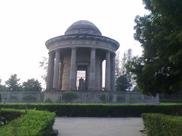
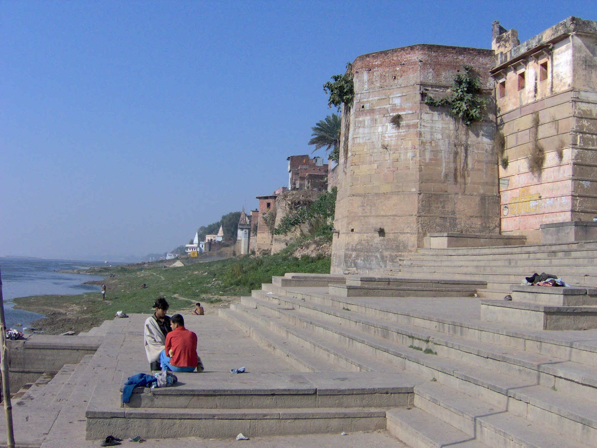

The Tomb of Lord Cornwallis, Governor-General of Bengal

The bank of Ganga River
Ghazipur is a city in the state of Uttar Pradesh, India. Here are some key details about Ghazipur:
1. **Location**:
Ghazipur is situated in the eastern part of Uttar Pradesh, along the banks of the Ganges River. It is approximately 80 kilometers east of the city of Varanasi.
2. **History**:
Ghazipur has a rich historical background. It was founded by the Mughal Emperor Akbar in the 16th century and has been an important center during various periods of Indian history. The city has several historical monuments, including the Tomb of Lord Cornwallis, who was the Governor-General of India in the late 18th century.
3. **Economy**:
The economy of Ghazipur is primarily agricultural, with a significant portion of the population engaged in farming. The city is known for the production of opium and has a government opium factory, which is one of the largest in the country. Other major crops include wheat, rice, and sugarcane.
4. **Culture**:
Ghazipur has a diverse cultural heritage, influenced by its historical and geographical significance. The city celebrates various festivals with great enthusiasm, including Diwali, Holi, and Eid. The local cuisine is rich and varied, reflecting the culinary traditions of Uttar Pradesh.
5. **Education**:
Ghazipur has several educational institutions, ranging from primary schools to colleges. The city has been working on improving its educational infrastructure to provide better opportunities for its residents.
6. **Transportation**:
Ghazipur is well-connected by road and rail. The Ghazipur City railway station links the city to major cities like Varanasi, Lucknow, and Delhi. The road network also facilitates easy access to neighboring regions.
7. **Tourism**:
Some notable places of interest in Ghazipur include the Tomb of Lord Cornwallis, the Ghazipur Opium Factory, and the Ghats along the Ganges River. The city's proximity to Varanasi, a major pilgrimage and tourist destination, also adds to its appeal.
8. **Demographics**:
Ghazipur has a diverse population with a mix of different communities and religions living together harmoniously. The city has a blend of rural and urban characteristics, contributing to its unique social fabric.